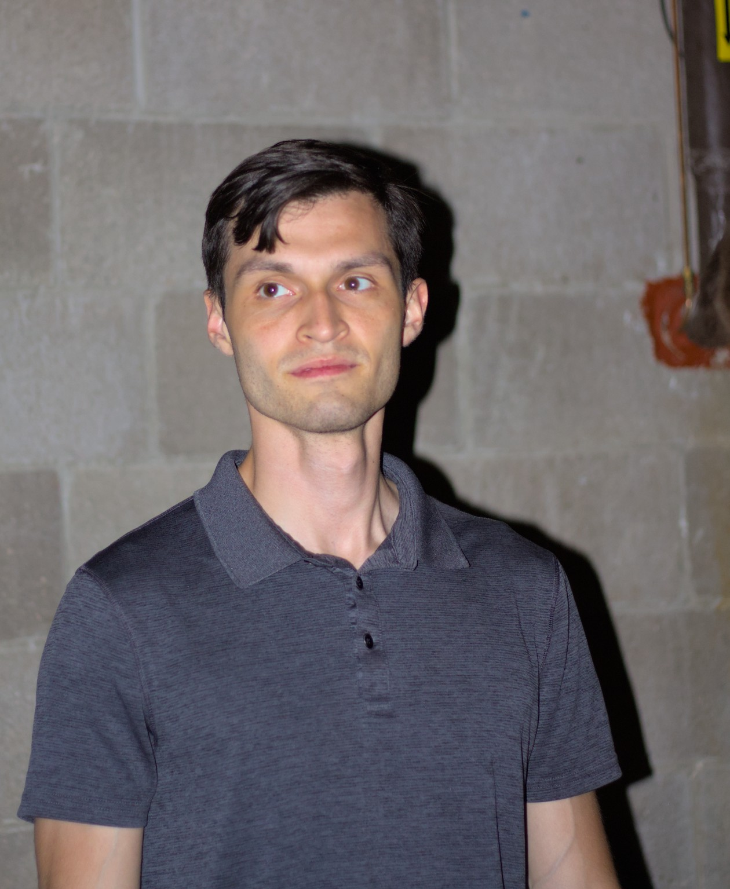
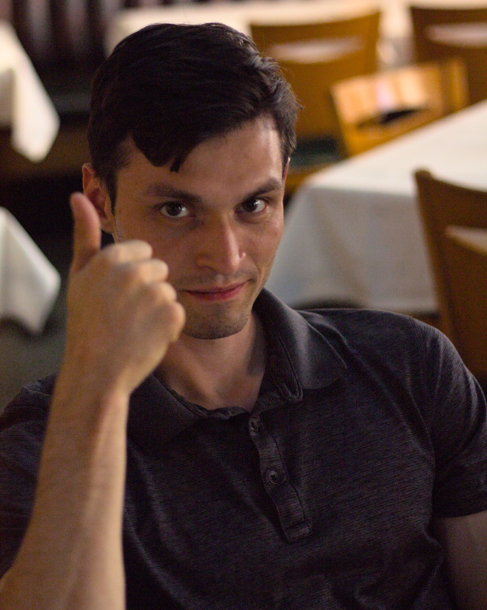
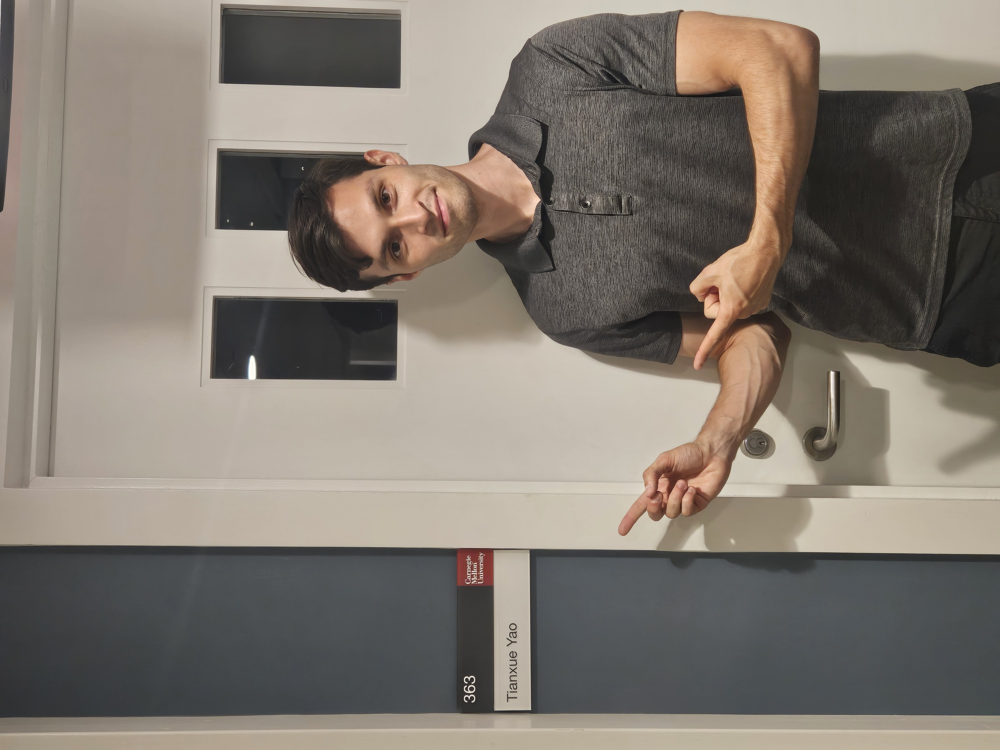
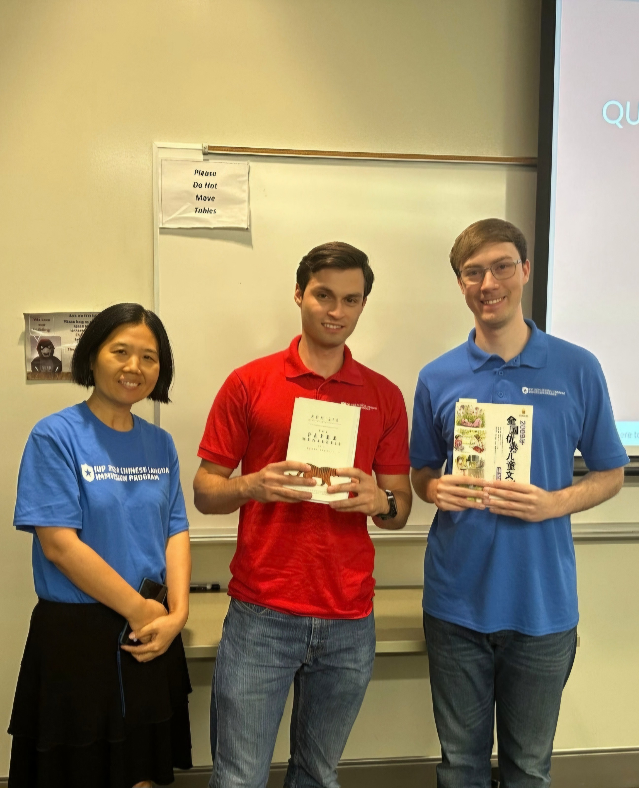
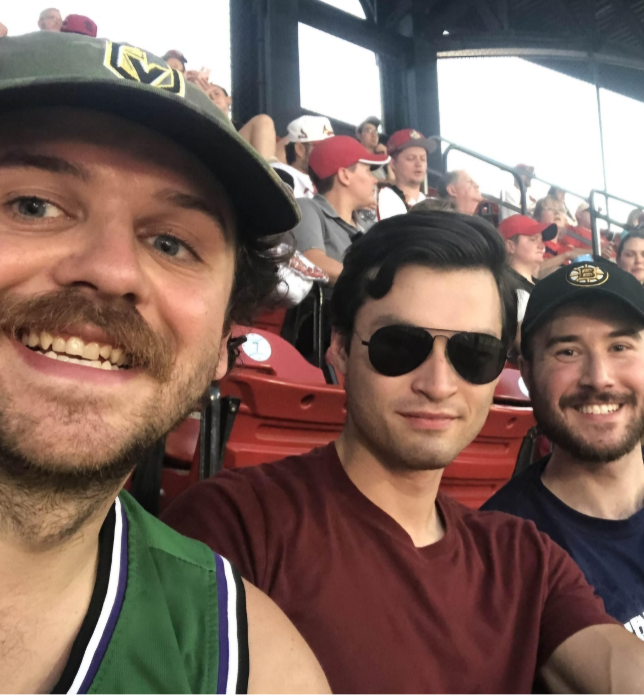
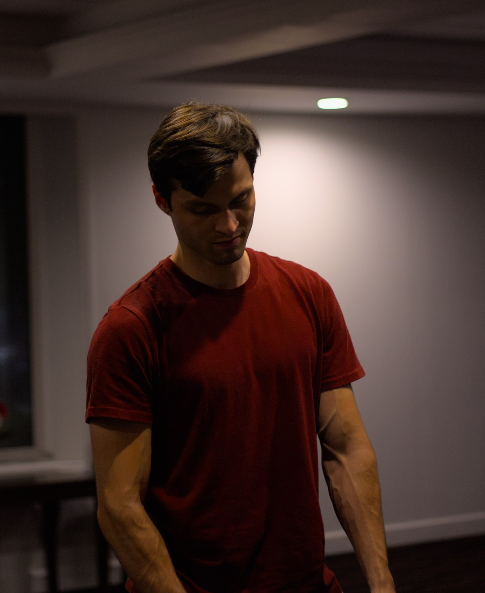
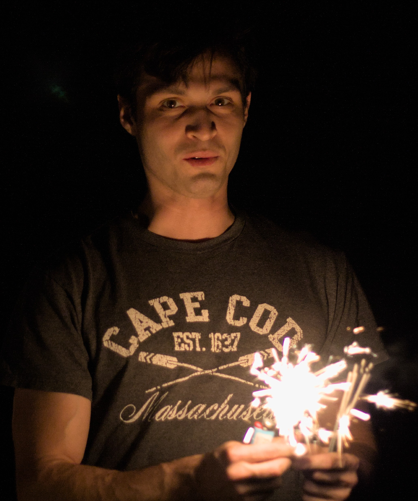
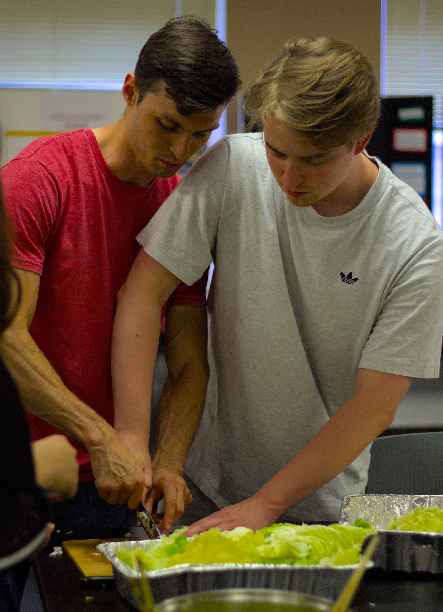

Welcome to
Matt's
Website
Ju
mp
to
About Me
Writing Portfolio
Developer Portfolio
Research & Publications
Education & Experience
   
 
 
About Me
When asked where I’m from, I’ll often respond by saying “the suburbs of Chicago”, but that answer doesn’t fully reflect the reality of the situation. My hometown is a growing suburb, but one that still carries that relaxed, easy-going lifestyle all suburbs seem to exude. The days pass with the same lethargy of the falling leaves which are ubiquitous throughout our little curated villages. To the north, the Wisconsin border promises mile-wide stretches of open fields, ready for plow. Meanwhile, an hour south is one of the great bastions of American industry, replete with thousand foot towers, billion-dollar businesses, and the familiar bustle of people in transit. I often find myself not only physically straddled between these two worlds, but metaphorically as well.
On the one hand, I’m drawn to the calmness of nature. Whether that be listening to the soft patter of waves on a rock-bed, or scouting a field of fireflies against the backdrop of a tree-line, the peace of nature helps me recharge and reconnect with my roots. In the suburbs, time seems to slow, which helps when I’m working on writing projects. I’ve been writing poetry and short stories for around eight years now. Some have been published, others are pending publish. I’ve always enjoyed working on difficult projects in isolation, giving the evdeavor my full focus. But that doesn’t mean I don’t enjoy the company of others. In fact, it’s just the opposite.
In High School, I was on the soccer team. Then in college, I ran sprints in track. In both cases, I became close with my teammates, and I learned the value of cheering each other on. I also picked up playing Pickleball before it was cool (is it cool now?). There are a couple outdoor courts near our house and an indoor court at a local gym for when the weather turns cold. Outside of sports, I also have learned the value of teamwork in the work and education worlds. When I worked at Cafe Zupas as a Shift Lead, I walked a thin line between empathy and fairness. In most cases, listening to others can go a long way in developing the trust necessary to enforce a set of rules. I relearned this lesson recently at a Chinese Immersion summer camp. Communication is key.
And that’s why I’m impassioned to succeed. Language
is
my passion: from the beautiful art of prose and poetry, to the scientific approach of linguistics, up to computer languages and machine learning. I love the technical, puzzle-like nature of language, with its web of features, just waiting to be unspun; and the more you unravel language, the more you can unravel the mystery of others. I seek to discover others through language, and to then turn around and help facilitate their own discoveries.
I’m currently a senior at Lake Forest College, pursuing a Self-Designed Major in “Language and Logic” with the hopes to pursue a Master’s Degree is Computational Linguistics, with a specific emphasis on NLP. I plan to create software and Web Applications to facilitate language learning and interpretation, and I feel machine learning is the most effective way to do this in the modern age. While keeping up with my studies, I’m working as a Chinese tutor at Lake Forest College, as well as privately in person and online, with plans to add a TA-ship in Web Development to the work list in the near future.